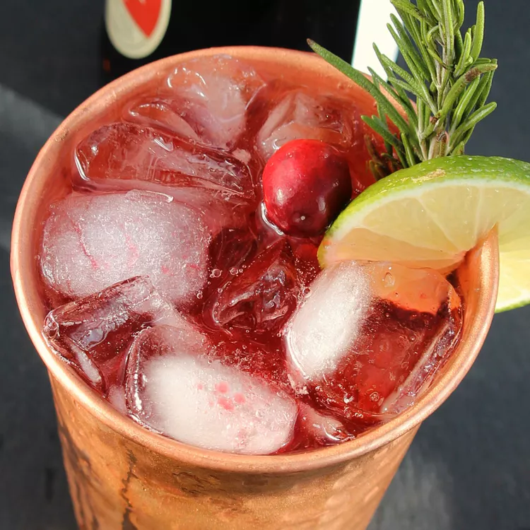

The Krank's Caribbean Mule
Back

Description
Inspired by the movie "Christmas with the Kranks", where empty nesters decide to spend their holiday money on a Caribbean cruise,
this cocktail is mixed with cranberry syrup for a refreshing break from the usual holiday drinks.
Ingredients:
Cocktail:
- 1 cup chopped fresh cranberries
- ½ cup water
- ½ cup white sugar
- 1 ounce freshly squeezed lime juice
- ice as needed
- 1 (12 ounce) bottle ginger beer (such as Fentimans)
- 4 ounces vodka
- 2 slices lime
- 4 fresh cranberries
- 2 sprigs fresh rosemary
Directions
- Combine chopped cranberries, water, and sugar in a saucepan over very low heat. Cook, stirring frequently,
until the cranberries have completely softened, about 15 minutes.
- Strain the mixture through a fine-mesh sieve, gently pressing the pulp to extract their liquid.
Let the syrup cool to room temperature, about 20 minutes. Cover and put in the refrigerator before use, 20 to 30 minutes.
- Pour 1 tablespoon cooled cranberry syrup and 1/2 ounce lime juice into two copper mugs or collins glasses.
Add ice. Pour in equal amounts of ginger beer and vodka to each.
Stir with a cocktail stirrer. Garnish with a lime wheel, rosemary sprig, and cranberries. Serve immediately.
Cook's Notes:
You can use frozen cranberries instead of fresh, if preferred.
Use the strained cranberry pulp for smoothies, pancakes, or even muffins.